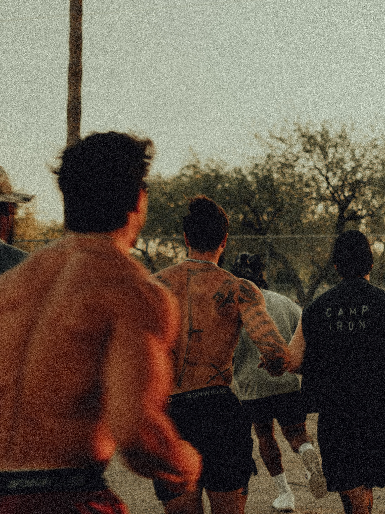
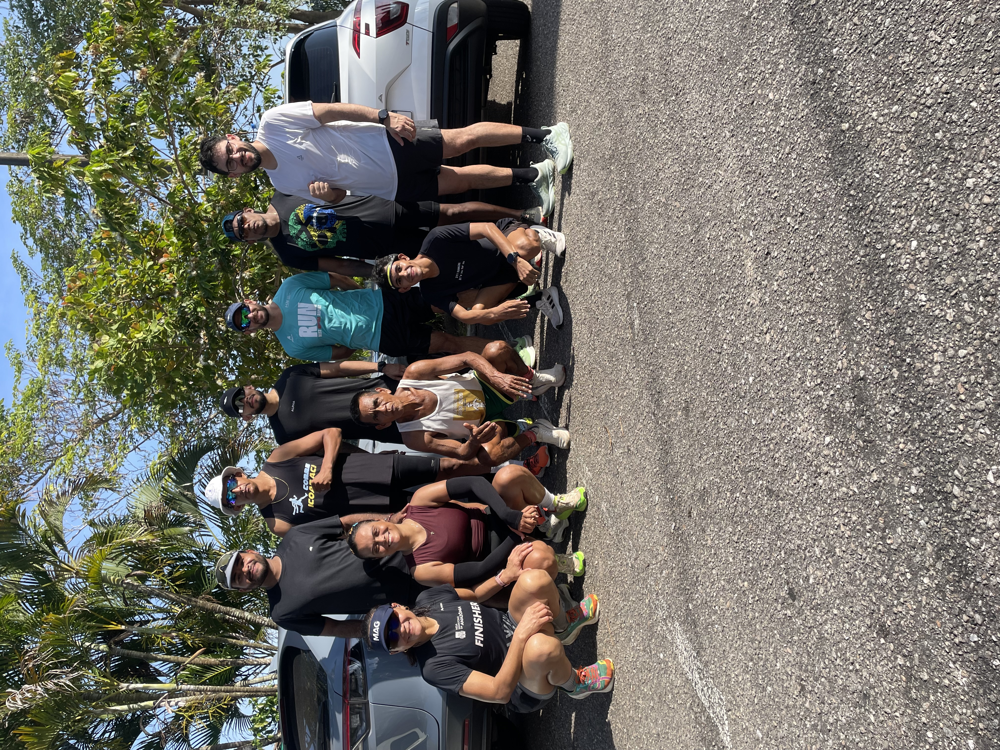

CORRIDAS · SUPERAÇÃO · PERSISTÊNCIAPRÓXIMA CORRIDA
NOW OR NEVER
RUN
3K 5K 10K | 3 de janeiro 2027
Saiba maisPRÓXIMO DESAFIO DA IYFY CHALLENGES
GLÓRIA
E HONRA 100K
100K em 31 dias em dezembro
Saiba maisMAIS QUE UM CLUBE
CLUBE
NO STRAVA
Compartilhe seus treinos e tenho acesso ao ranking
EntrarTORNE-SE MEMBRO
IYFY
RUNNING CLUB
Área exclusiva para membros
Saiba maisEm destaque
